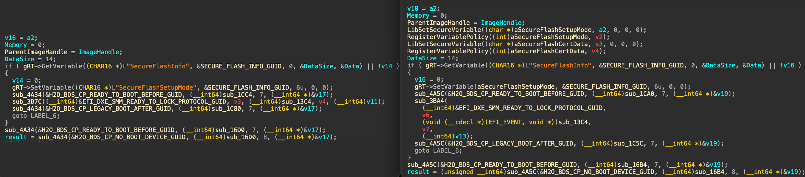

This post is likely the final one about a vulnerability I dubbed Hydroph0bia (as a pun on Insyde H2O) aka CVE-2025-4275 or INSYDE-SA-2025002. This part is about checking how Insyde fixed the vulnerability and if it's possible to bypass their fixes.
Intro
It is always interesting to see how a vulnerability with a massive supply chain impact gets fixed by different OEMs, and how fast they could distribute the fix across their fleets.
There been 10 days since the embargo end, and so far the only OEM who successfully delivered BIOS updates with fixes for Hydroph0bia is Dell.
Lenovo confirmed they are vulnerable, but will deliver the fixes not earlier than 2025-07-30 (later for some models).
Framework confirmed they are vulnerable, but provided no time estimates.
All other affected vendors (Acer, Fujitsu, HP, etc.) haven't published anything relevant yet, neither a security advisory, nor fixed BIOS updates.
Let's do some more reverse engineering and see how Insyde fixed the issue on their side. We can do so by comparing two BIOS updates released by Dell, one right before the fix, and the other right after.
Unwrapping the update images
Before we can compare the images, we need to unwrap them, i.e. remove the data that will not be flashed onto the SPI chip, and is only required for the FW updater application.
This can be done using the InsydeImageExtractor tool I wrote 11 years ago (props to Insyde for not updating the file format, once again the motto is "do not fix what is not broken").
Diffing the update images
There are several ways to find a difference between UEFI images, I prefer to start with generating UEFITool reports for them, then comparing the reports with a UI text diffing tool (Beyond Compare is a good one).

Looks like we have a fair amount of changes here, but it's certain that not all of them are related to Hydroph0bia. What we are interested in changes to drivers related to the firmware update process, i.e. BdsDxe, SecurityStubDxe, SecureFlashDxe and alike. Source code updates, especially addions of new code, often make the PE image size bigger, so we expect a fixed driver to be slightly bigger than a vulnerable one.
To compare the PE files, we can use one of the two popular solutions, both natively supported by IDA 9.1: bindiff or diaphora. I'll be using the second one just because I already have it installed and ready.
The comparison results we have here are as follows:
- BdsDxe has the same size (and same base address of 0, so changes could not be explained by relocations alone), likely having minor changes.
- SecurityStubDxe got a minor size reduction (32 bytes), likely having minor changes.
- SecureFlashDxe got a decent size increase (704 bytes), likely containing the main fix.
After disassembling both copies of BdsDxe the only relevant change is a replacement on a "naked" gRT->SetVariable call (that could not remove special Insyde variables with AW attribute) with a LibSetSecureVariable call (that uses SMM communication service if available, and will remove such kind of variables).
SecurityStubDxe got a minor fix for its handler of ExitBootServices event, the new version still flips a global, but doesn't call gBS->CloseEvent on itself. This changes is not related to Hydroph0bia at all, and the driver as it is will still trust a "shadowed" version of SecureFlashCertData if an attacker will be able to set it somehow.
SecureFlashDxe got a fair amount of changes:
- the same replacement of "naked" SetVariable call with a LibSetSecureVariable call for setting the Insyde special variables, that BdsDxe has.
- the same ExitBootServices event that SecurityStubDxe has.
- additional countermeasure against variable shadowing was added to the entry point: 
This additional calls attempt to remove SecureFlashSetupMode and SecureFlashCertData variable, if they are set, and guarantee that even if they are set as a special Insyde variable with AW attribute, they will still be removed.
The driver also now registers a VariablePolicy for both variables mentioned above, so that they could not be set from the OS. It is a newer mechanism that was previously used to protect SecureFlashInfo variable, but its default EDK2 implementation also looks vulnerable to the same "flip a global variable to disable the whole thing" approach we used to defeat InsydeVariableLock in part 2. As I do not have any formally-affected-now-fixed HW to actually test that assertion, let's believe it actually does something, for now.
Does this fix look sound?
A short answer is "yes, conditionally". The condition here is that an attacker will not find a way to set SecureFlashCertData variable in a way that will bypass both the VariablePolicy and the LibSetSecureVariable. It could be possible by manual NVRAM editing using SPI programming HW or a flash write protection bypass, and I expect this kind of attack to still work after the fix.
Physical attacks are of course out of scope for UEFI SecureBoot bypasses (because all the TA variables that SB trusts are stored in the same physical storage), but it still leaves the FW updater vulnerable to certificate hijacking (although it doesn't actually give an attacker any further capabilities if arbitrary flash write has already been achieved).
I do still believe that there's a much better way to fix the issue: STOP USING NVRAM FOR ANY SECURITY-SENSITIVE APPLICATIONS.
There's no need for SecureFlashCertData to be loaded in BdsDxe/CapsuleRuntimeDxe/WhateverElseDxe and then consumed by SecurityStubDxe. The latter might as well react to the presence of SecureFlashSetupMode trigger, then load the certs into memory using the very same LoadCertificateToVariable function once, then use it directly from memory to perform Authenticode verification for any amount of input files. The only possible regression I'd see with this approach is the case where downstream OEMs blindly copypasted the mechanism into their custom drivers, and it will end up broken for them when Insyde applies the update on their side. It is normal for security updates though, so "backwards compat" is a poor reason for not doing the fix properly.
I wrote to Tim Lewis (Insyde CTO) about the fix being somewhat weaker than I expected it to be, and got a reply from Kevin Devis (Insyde Security Strategist) saying that they did try to fix it "the right way", encountered regressions, then had to do it the way it's currently done.
Hi Nikolaj,
I dug into this a bit. We started on a fix based on your feedback. Unfortunately we ran into some regression issues and decided to fix “the easy way” for now.
In addition, we are creating an ECR for an engineer to investigate a solution that will not use variables. This way we mitigate the issue for now and improve the codebase even more later.
I’ll add a note to the task to circle back to you with the details of the change when it happens. It might take 6 months or so.
Thanks, Kevin
It is nice to see an IBV actually replying to emails, participating in responsible disclosure and coordination, releasing the advisories in time, etc. Way to go, Insyde folks!
Outro
I've recently bought an Acer Swift Go 16 to be my personal device-under-test for further investigations into the Insyde H2O platform. The FW for it doesn't have Hydroph0bia fix yet, but it's properly set up to protect DXE volume using FlashDeviceMap, which in turn is properly protected by Intel BootGuard. I hope Acer didn't make any additional messes or add any vulnerabilities of their own, but now I can verify most of the assertions that EDK2, Insyde and Acer could make about security of that FW. Stay tuned.
Acknowledgements
I want to thank the Dell security team for releasing the fix sooner than everybody else, could not write this post without them. I also want to thank Tim Lewis, Kevin Devis, and the whole Insyde security team for successful collaboration.
Links
Unwrapped Dell G15 5535 FW images (older 0.13.0, newer 0.14.0), UEFITool-generated reports for them (older, newer), extracted BdsDxe (older, newer), SecurityStubDxe (older, newer) and SecureFlashDxe (older, newer) are on GitHub.